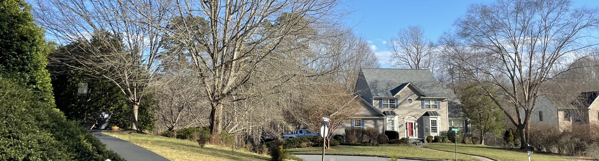

Suburban Diversity
Uncertainty in the spatial extent of suburbia

The suburb exists as a critical site of demographic research but there lacks common consensus on how this space is defined. Huge divergence in form, function, and structure within suburban settings poses challenges in how to meaningfully define what is suburban. This environment is constantly evolving and changing; new suburbs emerge as cities expand outward, while changes to extant suburbs call in to question whether a given location is still suburban. Demographically, suburban populations are becoming more non-white while poverty is consistently increasing across the urban periphery so our understanding of what it means to be suburban is constantly in flux.
Suburban landscapes exist with a huge divergence of structure and form in residential settlements, commercial activities, and industrial spaces. In Kenneth Jackson (1985) pioneering work, he characterizes the suburban landscape through four key principles: residential density, high homeownership, the location of the residential setting, and a distinctive journey to work time. However, not all peripheral and suburban growth operates with low density, and not all urban inner cities are denser than their suburban neighbors. Beyond this core literature, suburbs have been discussed in hugely different ways, including ethnoburbs (Li 2012), boomburbs (Lang and LeFurgy 2012), technoburbs (Fishman 1989), industrial and manufacturing suburbs (Keil 2013), and inner-ring and outer-ring suburbs (Hanlon 2008).
The definition of ‘suburban’ is inconsistent across academic literature posing a challenge to comparative work in this area. This work begins to consider the differences how suburban space is defined by examining three prominent taxonomies in terms of their spatial extent, demographic comparison, and change in both domains over time. The research presented in this website was achieved through two stages of analysis. Firstly, through a review of academic suburban-related literature, several definitions of suburban were selected which forward an alternative spatial delineation of this landscape, with a brief review of this is presented on the methods page. After identifying several suburban typologies, the research develops an exploratory analysis to explore how the sociospatial characteristics of this landscape have changed between 2010 and 2020. The cities of Charlotte, NC, Pittsburgh, PA, and Portland, OR, form the case studies for this research, with each location existing with separate and distinct characteristics throughout the urban and suburban realm.